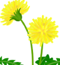
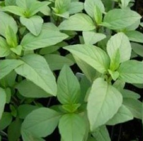
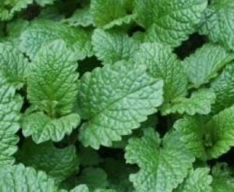

Mikro bilje/mikro povrce
Bosiljak je biljka od davnina poznata kao začin. Smatra se da potiče iz Indije, a danas se najviše upotrebljava u Francuskoj i Italiji. To je jednogodišnja zeljasta biljka koja pripada porodici usnatica (Lamiaceae, Labiateae). U obliku čaja bosiljak se koristi kao sredstvo za umirenje i kod problema sa varenjem, a ima i izraženo antiseptično svojstvo.
Poruci odmah
Lekovito bilje/Spelta
Beli slez je visok 1-2 m. Cela biljka je obrasla gustim svilastim dlakama, tako da su listovi srebrnobeličasti i meki poput kadife. Stablo je uspravno, jednostavno ili razgranato, pri dnu odrvenjeno. Listovi su spiralno poređani, a iz njihovih pazuha pri vrhu stabljike i ogranaka izbijaju cvasti belo-ružičastih, 1-2 cm velikih cvetova. Cveta preko celog leta.
Poruci odmah

Zimnica
Вишегодишња зељаста биљка са кратким ризомом и подземним столонама. Стабло је усправно, длакаво или голо и четворострано. Листови су светлозелени, јајасти са ободом који је грубо тестераст и распоређени су наспрамно. Цветови су сакупљени по 3-10 у пазуху вршних листова. Цветови су двоусни бели, светлољубичасти или жути.
Poruci odmah